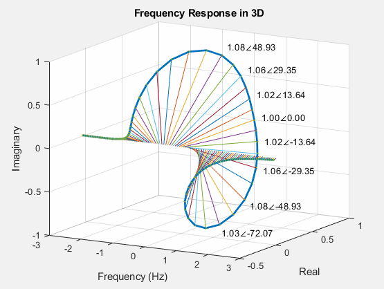

Visualizing Complex Functions#
Visualizing Simple Complex Functions#
What is the domain and range of \(f(x)=\sqrt{x}\)? It’s likely that your high school math teacher emphasized that both the domain and range comprise positive real numbers, as illustrated in the plot below:
{kind=link}
For engineering students, it’s well-known that \(\sqrt{x}\) becomes a complex number when \(x\) is negative. Consequently, the domain extends across all real numbers, denoted as \((-\infty, \infty)\), and the range encompasses complex numbers, represented as \(\mathbb{C}\). Now, let’s explore the visualization of \(f(x)=\sqrt{x}\). As you’re aware, complex numbers can be portrayed in two-dimensional space, where the real part aligns with the \(x\)-axis, and the imaginary part aligns with the \(y\)-axis.
Given this, how would you graph \(f(x)=\sqrt{x}\)? Complex functions need a 3-dimensional representation, as depicted below:
{kind=link}
Here, the \(x\)-axis corresponds to the \(x\) values, the \(y\)-axis to the real part, and the \(z\)-axis to the imaginary part. Notably, when \(x\) is positive, \(f(x)\) is always real, while when \(x\) is negative, \(f(x)\) is consistently imaginary. This distinction adds a layer of understanding to the behavior of the complex function across different domains.
Visualizing Complex Exponential Functions#
Let’s explore a complex exponential function given by \(f(t)=e^{j\theta}\). This function represents a collection of points on the unit circle. As the parameter \(\theta\) increases, the complex function \(f(\theta)\) traces a counterclockwise path from 1 and completes a full revolution, returning to 1 with each period.
{kind=link}
Nevertheless, it isn’t merely a unit circle. In reality, it takes the form of a helix, where its central axis aligns with \(\theta\). It is evident that concerning \(\theta\), the real axis corresponds to \(\cos\theta\), and the imaginary axis corresponds to \(\sin\theta\), as expressed in Euler’s identity: \(e^{j\theta} = \cos\theta + j\sin\theta\).
{kind=link}
Now, contemplate two complex exponential functions with distinct frequencies: \(e^{j2\pi t}\) and \(e^{j3\pi t}\). When visualized in the complex plane with both real and imaginary axes, the two functions coincide, making it challenging to differentiate between them, as illustrated below.
{kind=link}
In three-dimensional space, the distinction between the two helixes becomes apparent. The two complex exponential functions are orthogonal to each other, signifying their lack of correlation. This distinction is evident when observing their real and imaginary parts, as depicted below.
{kind=link}
Visualizing General Complex Functions#
Up to this point, our focus has been on unit complex exponential functions. Now, let’s turn our attention to a general complex function, particularly
In contrast to the unit complex exponential functions discussed earlier, the magnitude and phase of general complex functions do not demonstrate linear changes with varying frequencies. As depicted in the figure below, interpreting the trends of the curves becomes challenging, even in a 3-dimensional plot.
{kind=link}
A widely embraced strategy to enhance the analysis of complex functions involves decoupling the magnitude and phase components. This separation leads to the creation of two distinct 2-dimensional plots: one showcasing the magnitude, \(|H(\omega)|\), and the other illustrating the phase, \(\angle H(\omega)\), with respect to varying frequencies, as visually represented below.
{kind=link}
These graphical representations are collectively known as Bode plots. It’s important to recognize that, a century ago, Bode did not have access to the advanced 3-D rendering tools available today, and consequently, they relied on 2-dimensional visualization.
The Bode plot stands as an invaluable instrument for comprehending a system’s response across various frequencies. When employing a logarithmic scale, the Bode plot takes the form illustrated in the figure below:
{kind=link}
Additionally, when examining the 3-dimensional plot in the real-imaginary plane, it transforms into what is known as the Nyquist plot:
{kind=link}
The Nyquist plot, being a parametric representation of a frequency response, finds extensive use in the fields of automatic control and signal processing. It provides valuable insights into the stability and behavior of dynamic systems, making it a crucial tool for engineers and researchers.
Visualizing 4-D Complex Functions#
Until now, our exploration has centered on complex functions with a real domain (\(\mathbb{R}\)) and a complex range (\(\mathbb{C}\)). Let’s now delve into complex functions with both a complex domain (\(\mathbb{C}\)) and a complex range (\(\mathbb{C}\)). Specifically, we will examine the transfer function characterized by the expression:
Here, \(s=\sigma+j\omega\) represents a complex number, introducing two variables for the domain and two for the range. Attempting to visualize this function in 3-dimensional space becomes impractical due to the involvement of four independent variables in transfer functions. Consequently, we need to decouple the magnitude and phase components, represented as \(|H(s)|\) and \(\angle H(s)\), respectively. Although the domain of each component remains complex (\(\mathbb{C}\)), the range is now real (\(\mathbb{R}\)). The magnitude response, \(|H(s)|\), is commonly referred to as the pole-zero map, often depicted in 2-dimensional space, as shown below.
{kind=link}
This representation provides a more manageable visualization, offering valuable insights into the behavior of the complex function across various frequencies and complex values of \(s\). It’s important to note that this 2-dimensional portrayal is a simplified representation for its corresponding 3-dimensional plot, as depicted below:

Crucially, the transfer function assumes the role of the frequency response of a system when the real part of \(s\) is set to zero, i.e., \(s=j\omega\) or \(s|_{\sigma=0}=j\omega\). Thus, the red line along the imaginary axis in the 3-D plot represents the frequency response of the system, i.e., \(H(s)|_{s=j\omega}=H(j\omega)\). This insight enhances our understanding of the system’s characteristics across different frequencies.
Download the MATLAB files to generate the plots used on this page:
complex_plots.m : Used for rendering \(\sqrt{x}\) and complex exponential functions.
FrequencyResponse.m: Used for rendering the Bode plots.
PlottingPoleZeros.m: Used for rendering the pole-zero plots.